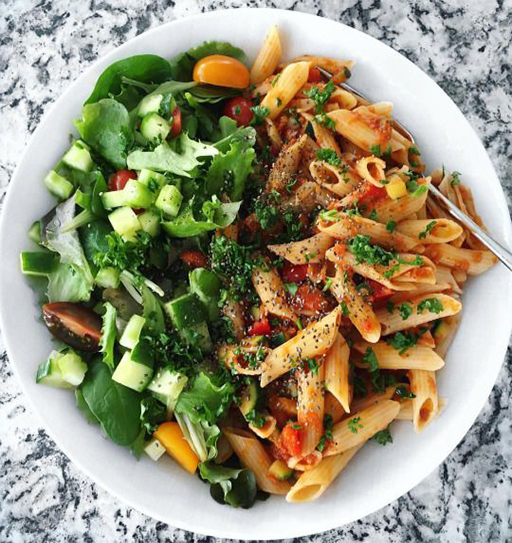
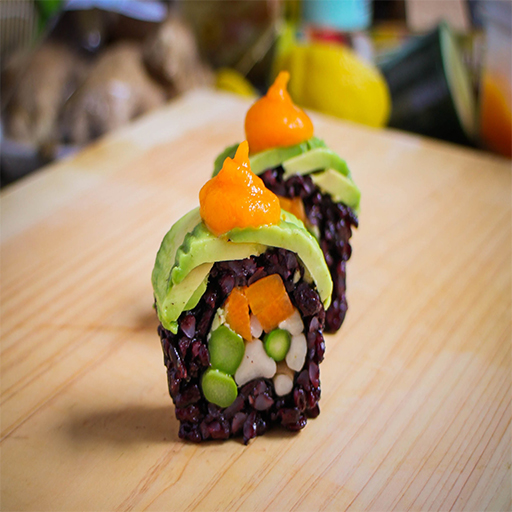
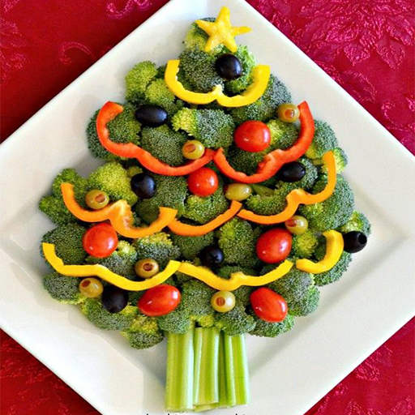

<section class="cont">

        <div class="content">
                
               

                 <article id="main-col">
                         <h1 class="page-title">Home</h1>
                         <p>"Greenrecipes.com, the third largest food site on the web,
                              is an active social network of home cooks who connect and share recipes, 
                              photos, cooking tips and food trends in real time."</p>
                         
                             <p>"Formerly known as foodzaar, and originally as Cookcenter briefly before that, 
                                 Greenrecipes.com was created in 1999 outside of Seattle, 
                                 Washington. What started as an idea to connect 
                                 home cooks from all over the world has grown into a daily cooking community, 
                                 featuring 500,000+ user-generated recipes, 125,000+ photos and millions of reviews. </p>
                                    
                        <p>Have questions, compliments or concerns? Visit our contact us page where you can also contact us.</p>
                     </article>

                     <div class="image">
                     
                   
                     
                     
                     
                    </div>
                     
                 
         </div>
         

           
   
            
                
            
</section>

